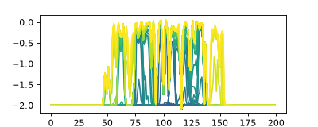
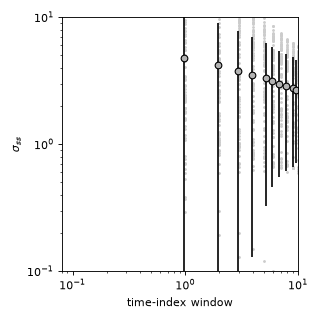

Calculating compensational stacking¶
Calculate compensational stacking.
import numpy as np
import matplotlib.pyplot as plt
import sandplover as spl
import matplotlib.animation as animation
from matplotlib.gridspec import GridSpec
import matplotlib
import pandas as pd
import xarray as xr
golfcube = spl.sample_data.golf()
golfstrat = spl.cube.StratigraphyCube.from_DataCube(golfcube, dz=0.05)
# do a single demonstration that it works for simple section
strike_section = spl.section.StrikeSection(golfstrat, distance=3000)
strike_section_stratal_surfaces = golfstrat.strata[:, 40, :]
# show the section
cmap = matplotlib.colormaps["viridis"].resampled(91)
fig, ax = plt.subplots(figsize=(5, 2))
for i in range(91):
ax.plot(golfstrat.strata[i, 40, :], color=cmap(i))
plt.show()
(Source code, png, hires.png)
{kind=link}
{kind=link}

# do the computation
sigmas, etas = spl.strat.compute_compensation(
strike_section_stratal_surfaces, clip_ends=20
)
# pack the computed results into a long table
df = pd.DataFrame(np.vstack((sigmas, etas)).T)
df.columns = ["sigma", "eta"]
# make a plot
groups = df.groupby(pd.cut(df["eta"], np.logspace(-2, 1, num=100)))
midpt = [(a.left + a.right) / 2 for a in groups.mean().index]
mean_pts_kw = dict(
mec="0.0", ls="none", mfc="0.7", marker="o", alpha=1, ms=6, ecolor="k"
)
fig, ax = plt.subplots(figsize=(4, 4))
ax.plot(df["eta"], df["sigma"], marker=".", color="0.8", markersize=3, ls="none")
ax.errorbar(midpt, groups.mean()["sigma"], groups.std()["sigma"], **mean_pts_kw)
ax.set_xscale("log")
ax.set_yscale("log")
ax.set_xlim(8e-2, 1e1)
ax.set_ylim(1e-1, 1e1)
ax.set_ylabel("$\\sigma_{ss}$")
ax.set_xlabel("time-index window")
plt.tight_layout()
plt.show()
(Source code, png, hires.png)
{kind=link}
{kind=link}

Note
The data used in this computation (the golf sample dataset), are from a progradational delta. The compensation timescale is likely difficult to predict accurately in this circumstance. This example is to show the workflow for computing compensational stacking statistics, rather than an actual data analysis.